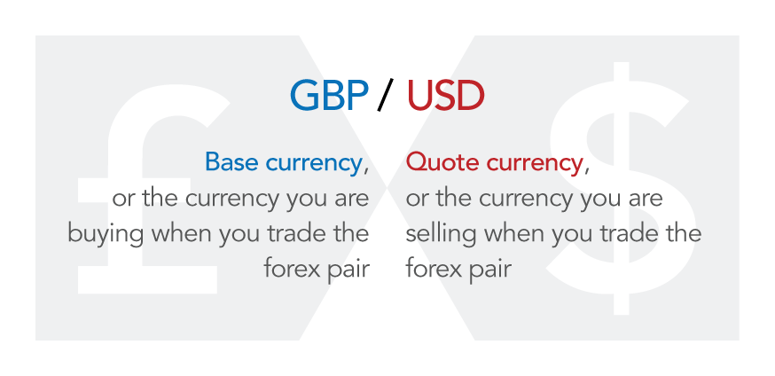

What is forex?
Forex is short for foreign exchange – the transaction of changing one currency into another currency. This process can be performed for a variety of reasons including commercial, tourism and to enable international trade.
Forex is traded on the forex market, which is open to buy and sell currencies 24 hours a day, five days a week and is used by banks, businesses, investment firms, hedge funds and retail traders.
How do currency markets work
Unlike shares or commodities, forex trading does not take place on exchanges but directly between two parties, in an over-the-counter (OTC) market. The forex market is run by a global network of banks, spread across four major forex trading centres in different time zones: London, New York, Sydney and Tokyo. Because there is no central location, you can trade forex 24 hours a day.
There are three different types of forex market:
Spot forex market: the physical exchange of a currency pair, which takes place at the exact point the trade is settled – ie ‘on the spot’ – or within a short period of time
Forward forex market: a contract is agreed to buy or sell a set amount of a currency at a specified price, to be settled at a set date in the future or within a range of future dates
Future forex market: a contract is agreed to buy or sell a set amount of a given currency at a set price and date in the future. Unlike forwards, a futures contract is legally binding
Most traders speculating on forex prices will not plan to take delivery of the currency itself; instead they make exchange rate predictions to take advantage of price movements in the market.
What is a base and quote currency?
A base currency is the first currency listed in a forex pair, while the second currency is called the quote currency. Forex trading always involves selling one currency in order to buy another, which is why it is quoted in pairs – the price of a forex pair is how much one unit of the base currency is worth in the quote currency.
Each currency in the pair is listed as a three-letter code, which tends to be formed of two letters that stand for the region, and one standing for the currency itself. For example, GBP/USD is a currency pair that involves buying the Great British pound and selling the US dollar.
So in the example below, GBP is the base currency and USD is the quote currency. If GBP/USD is trading at 1.35361, then one pound is worth 1.35361 dollars.
If the pound rises against the dollar, then a single pound will be worth more dollars and the pair’s price will increase. If it drops, the pair’s price will decrease. So if you think that the base currency in a pair is likely to strengthen against the quote currency, you can buy the pair (going long). If you think it will weaken, you can sell the pair going short.
